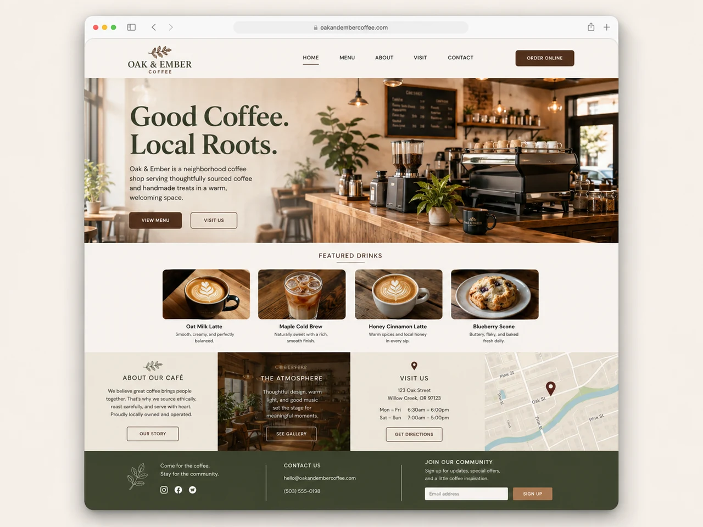
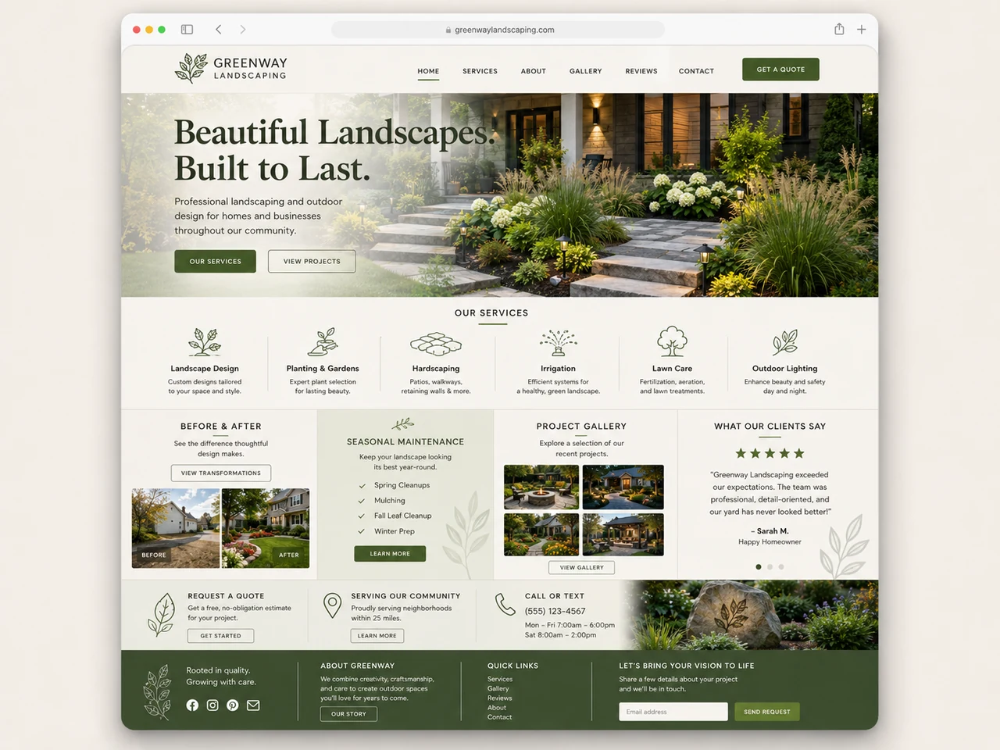
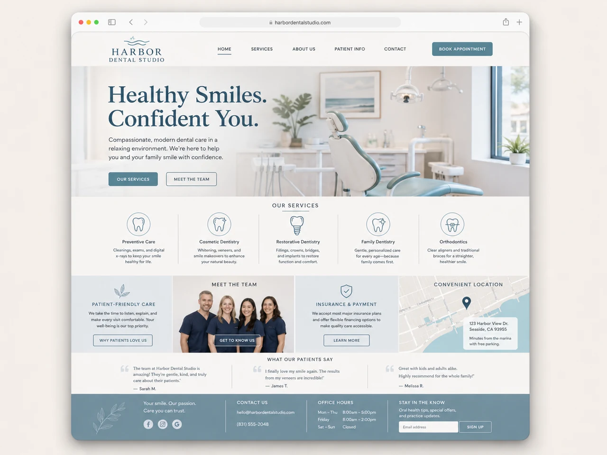

I’m a 16-year-old independent web designer who enjoys helping small and local businesses improve how they show up online. My focus is simple: clearer information, stronger layouts, better mobile experiences, and a website that feels like it belongs to the business behind it.
Independent web designer
Eric Helping local businesses build cleaner, more effective websites.
I work with businesses that need a new website or thoughtful improvements to the one they already have—making each page clearer, more modern, and easier to use.
Based on practical design, careful details, and straightforward communication.
01 / About me
Personal work with a practical point of view.
I enjoy taking websites that feel dated, confusing, or unfinished and turning them into something that feels considered and easy to understand.
02 / What I do
Focused improvements, from first page to finished site.
The work can be a complete new website or a smaller set of improvements to make an existing site feel more useful and up to date.
Website redesigns
Refreshing older sites with a clearer structure and a more current visual style.
New website builds
Creating a complete, focused website from the ground up for a local business.
Homepage improvements
Making the first page easier to scan, understand, and move through.
Mobile-friendly design
Ensuring the site feels comfortable and straightforward on smaller screens.
Cleaner layouts
Improving spacing, typography, hierarchy, and the overall flow of information.
Contact and estimate sections
Making important next-step information easier for customers to find and use.
Basic SEO improvements
Strengthening page titles, descriptions, headings, and on-page structure.
Updates and maintenance
Keeping content, layouts, and site details accurate after the main build.
03 / My work
A growing collection of website examples.
This site also serves as a home for selected design work, experiments, and sample projects that show how I think about layout, clarity, and visual direction.
Featured examples
Project names and previews can be replaced with finished client work as the portfolio grows.



04 / Approach
Simple choices that make a site feel better.
I try to remove unnecessary friction and make each page feel calm, understandable, and useful—especially for someone visiting from a phone.
Keep it simple
Use only what the page needs, with enough space for the important information to stand out.
Make it clear
Organize content so visitors can understand the business without having to search around.
Design for real use
Think about common customer questions, smaller screens, and the details people need most.
Refine the details
Improve typography, spacing, visual rhythm, and consistency so the site feels complete.
A business website should feel easy to trust and easy to use.
My goal is to create work that feels polished without becoming complicated—something clear enough for customers and flexible enough for the business to keep using.